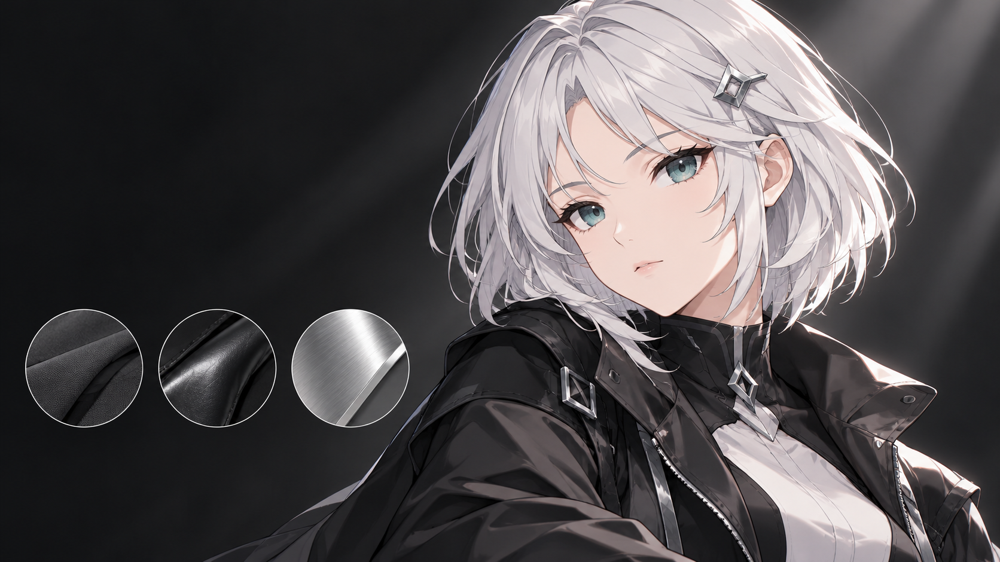

本文讨论日式角色三渲二的着色结构，重点分析面部阈值图及其与头发、眼睛、描边和光照的协同关系。《终末地》作为视觉参照，相关技术分析区分主创访谈、社区复现与画面观察，来源见第 10 节。HLSL 为实现示意，配套交互使用程序合成数据，不涉及游戏资产。
日式角色三渲二的核心，是在连续的三维光照中保持经过设计的二维形状。面部需要简洁的阴影，头发需要受控的高光，眼睛需要稳定的表情信息，描边则需要适应镜头与距离变化。这些局部处理必须遵循统一的光照规则。面部阈值图将阴影形状从几何法线中解耦，是本文的重点；相关社区实现覆盖《原神》《崩坏：星穹铁道》及《终末地》风格角色。
《终末地》的官方画面用于分析风格与视觉层级；具体算法则结合社区作者公开的分析与实现讨论。视觉相似性与实现一致性需要分别判断。

00 / 角色着色结构总览
| 部位 | 代表性实现路径 | 关键输入 |
|---|---|---|
| 漫反射 | 半兰伯特 + smoothstep 得到明暗，再用 Ramp 贴图给暗部上色 | ILM 贴图（AO、Ramp 行号、高光遮罩）、顶点色 |
| 脸 | SDF 阈值图：一张图装下所有光照角度的阴影形状，运行时一次采样加一次比较 | 阈值图、头部骨骼的前/右/上向量、角色光方向 |
| 刘海投影 | 屏幕空间深度偏移，或把头发网格沿光向偏移后单独画一遍 | 头发深度/模板、光向 |
| 头发 | 球面化法线压住乱法线；切线高光（Kajiya-Kay）加噪声偏移，卡通化后叠两层 | 头发切线、偏移噪声图、头部球心 |
| 眼睛 | 固定贴图高光；用模板缓冲让眼睛透过头发显示 | 模板值、渲染顺序 |
| 描边 | 背面外扩；法线用平滑法线，线宽在裁剪空间算，粗细由顶点色控制 | 平滑法线（存切线空间）、顶点色 |
| 光照 | 角色光和场景光分开，角色主光方向向相机靠拢 | 相机矩阵、场景光颜色 |
面部阴影直接影响五官的可读性，也是角色风格控制的重点。MIZI 的卡通渲染系列对法线编辑、距离场与 MatCap 等路线进行了比较，其中面部篇还讨论了《赛马娘》的相关技术分享[8]。
01 / 材质分区与着色数据
一个角色通常按部位分成脸、头发、眼睛、身体、衣服几套材质，各自的 Shader 共享同一组输入：角色光方向、头部骨骼朝向、相机方向。分区与局部控制可编码在贴图和顶点色中，使美术能够在统一的着色结构下调整区域响应。

相关社区实现通过 ILM 控制贴图存储区域数据，各通道的含义由资产流程与着色器共同约定。下表比较两份公开实现，说明相似的贴图名称并不代表相同的数据布局：
| 通道 | 原神系（Gaolingx 的 URP 实现）[13] | 星穹铁道系（LiKira 的复现）[4] |
|---|---|---|
| R | 高光类型分层，按值域区分 | AO 区域，常暗，不随光变化 |
| G | 二级阴影遮罩，不随光向变化的常驻阴影 | 高光区域；脸部用 SDF 图的 G 通道做眼部阴影遮罩 |
| B | 高光强度遮罩 | 高光遮罩 |
| A | Ramp 行号，决定暗部颜色 | Ramp 的 V 偏移，选部位的漫反射颜色 |
Gaolingx 的 README 中 B 通道说明存在编码异常；此处仅列出可确认的高光强度用途。顶点色同样各家不同：他的实现里 VertexColor.a 是描边粗细，VertexColor.g 是 Ramp 偏移。
雪羽的《原神》风格还原进一步展示了 G 通道与分级阴影的关系：沿用《罪恶装备》的 LightMap 思路，阴影分两级，一级阴影随光照变化，二级阴影固定不变，所以不能只用一次半兰伯特切完。作者还对参考算法进行了简化，以较直接的表达实现目标效果[29]。
flowchart TB A["共享输入：角色光、头部坐标、相机"] --> B["材质分区与控制贴图"] B --> C["面部：阈值阴影与局部遮挡"] B --> D["头发：发束明暗与方向性高光"] B --> E["身体与服装：Ramp 与材料反射"] C --> F["光照分量组合"] D --> F E --> F F --> G["眼睛透显与描边 Pass"] G --> H["曝光、调色与抗锯齿"]
02 / 漫反射：阈值加 Ramp
基础漫反射首先将连续的 N·L 映射为亮暗区域，以可调过渡控制交界，再通过 Ramp 定义暗部色彩，避免仅以亮度缩放表达阴影。
式 1｜N、L 为同一空间中的单位向量；A 为区域遮罩，a 为阈值，ε 为过渡宽度，r 为材质行号。⊙ 表示逐通道相乘。
float hl = dot(N, L) * 0.5 + 0.5; // 半兰伯特
float lit = smoothstep(_ShadowRange, _ShadowRange + _ShadowSmooth, hl * aoMask);
float2 uv = float2(lit, rampRow); // 横轴明暗，纵轴是 ILM.a 选出的材质行
float3 shade = SAMPLE_TEXTURE2D(_Ramp, sampler_Ramp, uv).rgb; // Ramp 的 Wrap Mode 必须是 Clamp
float3 diffuse = albedo * shade; // 亮部落在 Ramp 最右端，值为白两份公开实现包含以下资源约定：Ramp 的 Wrap Mode 要设成 Clamp，否则边缘会采到另一端的颜色，出现噪点[4]；原神的 Ramp 把明暗交界放在偏右的位置，亮部那一大段几乎没有变化，直接去掉，省带宽也给美术留了空间；Ramp 分白天和夜晚两组行，用一个开关切换[13]。暗部泛红、泛冷这类“假次表面散射”就是直接画在 Ramp 里的。
色彩空间要分开处理：Ramp 和基础色是 sRGB，ILM、阈值图、各种遮罩是线性数据，导入时关掉 sRGB，否则 Gamma 会把数值扭曲[7]。
CPU 生成的理想球面，只有一盏方向光，没有投影和环境光。三个球用同一组数据：左边是连续的 N·L，中间是硬阈值，右边是带过渡的阈值。
《罪恶装备 Xrd》的公开技术分享是理解作者控制的重要案例。它的美术风格分享里讲到：模型的法线是手工调过的，让明暗边界落在画师想要的位置；光向量也可以按镜头和角色单独调；再用阈值贴图和顶点色在局部推移阴影边界；描边除了背面外扩，还有画在贴图上的“本村线”。Qian Kanglai 照着公开资料在 Unity 里复现过一版，结论是整体就是 Blinn-Phong 加 Toon，参数全由贴图驱动[1][2]。ILM、Ramp 和顶点色则将局部艺术控制组织为可维护的数据接口。ashyukiha 在知乎配套的开源 URP 实现，把面部阴影图、Ramp、金属高光和描边都放在一起，可用于分析各项控制的数据流[23]。
面部对阴影形状有更严格的要求，需要进一步引入专门控制。
03 / 面部阴影：SDF 阈值图
几何法线光照在面部的局限
人脸的法线起伏太大。鼻梁、眼窝、下颌线处的法线变化剧烈，用 N·L 加阈值切出来，边界是破碎的：鼻子在脸颊上投出一块奇怪的黑，下颌线锯齿状，侧光时眼眶整个被吞掉[7]。动画里的脸不是这样的，它的阴影是几块干净的形状，光转动时整体平滑地推过去。
MIZI 的面部篇把常见方案分成三类：修改法线、距离场阴影、Matcap[8]。Yu-ki016 的说法更简短：目前卡通脸部光照主要是修改法线和使用 SDF 贴图两条路，新出的二游基本都用 SDF[9]。
改法线有三种做法，问题也都类似：
- 球形包裹体法线。把一个球的法线传递到脸上，阴影形状就是球的阴影。操作简单，但只能得到球的形状。
- 改拓扑再改法线。《罪恶装备》和《蓝色协议》的做法：把脸的布线改成目标阴影的形状，再逐点调法线。能得到理想的形状，但很费工，而且两种阴影形态之间会跳变。罪恶装备视角固定可以忽略，蓝色协议里就能明显看出来。
- 拉平法线或画法线贴图。修改后的法线不连续，同样有跳变[8]。
Matcap 在光源不动时可以直接用来切分光影，七つの大罪的技术分享就这么做，理由是动画里的阴影更看重情绪表达而非物理正确[8]。光源变化时，需要明确映射与光向之间的关系，否则会失去光照一致性。
SDF 路线正好相反：形状完全由画出来的图决定，不同形态之间自然过渡。MIZI 提到这个方法最早用在脸上的出处不明，疑似来自米哈游的技术分享，原神里确实在用[8]。张洋铭整理的流程是：美术画关键帧，经过 SDF 插值输出阴影贴图[12]。
阈值图里存的是什么
这张图的每个像素存一个数 T，含义是：光从正前方转到多少度时，这个点进入阴影，除以 180°。运行时只要算出当前光的角度 φ，拿 T 去比：T > φ/π 就是亮，否则是暗。光从 0° 转到 180°，每个像素在恰好的那一刻变暗，整体看来就是阴影形状在脸上平滑推过。
这样做的好处是把“逐像素算光照”变成了“整个头部共用一个角度”。mos9527 的说法很直接：着色只和光照角度有关，相当于对一块法线一致的平面打光[5]。
这里需要区分两种数据。真正的 SDF（有符号距离场）只出现在烘焙阶段，用来把几张关键帧插值成中间形状；运行时用的这张图，CandleSpark 称之为“SDF 过渡图”，它的灰度是一组等高线，每条等高线对应一个光照角度下的明暗分界。因此，过渡图不应按严格的有符号距离场解释[3]。本文以“面部阈值图”指代运行时使用的过渡图。
阈值图的离线烘焙
flowchart TB A["设计不同光照角度的二值关键帧"] --> B["检查亮区随角度单调收缩"] B --> C["每帧计算有符号距离场"] C --> D["寻找相邻关键帧的正负翻转"] D --> E["距离值插值：求过零角度"] E --> F["将过零角度归一化为阈值 T"] F --> G["导出线性数据纹理"]
以下流程将关键帧阴影转换为单张阈值图：
- 手绘或在 Blender 里用平行光渲染，得到若干个角度下的二值阴影图，比如每 15° 一张。程序渲染出来的会带上不好看的几何阴影（鼻影），要手工修。
- 对每张二值图求 SDF：亮区内取正、暗区内取负，边界处为零。
- 相邻两张图之间对 SDF 值做线性插值（算法出处见[10]），找出每个像素“由亮变暗”的那个角度，这个角度就是
T。 - 把所有区间的结果合成一张图。CandleSpark 的做法是先对每对关键帧做过渡图，再逐像素取平均合成[3]；下面的写法更直接，一次扫完所有关键帧。
式 2｜Mₖ 为受光区域的二值掩码，距离场亮区为正、暗区为负。θ 使用弧度；下方 Python 使用角度，因此除以 180。λ 是插值距离场的过零位置，不是原几何的精确受光解。
import numpy as np
from scipy.ndimage import distance_transform_edt as edt
def signed(lit): # lit: bool，True = 受光
return edt(lit) - edt(~lit) # 亮区为正，暗区为负，边界处过零
def bake(masks, angles):
"""masks: 各关键帧二值图，亮区随角度增大而缩小；angles: 对应角度（度，升序）。
返回 T：该像素进入阴影时的光照角度 / 180。"""
S = np.stack([signed(m) for m in masks]).astype(np.float64)
a = np.asarray(angles, np.float64)
T = np.full(S.shape[1:], np.nan)
T[S[0] <= 0] = a[0] / 2 # 第一帧就已在阴影里
T[S[-1] > 0] = (a[-1] + 180) / 2 # 最后一帧仍然受光
for k in range(len(a) - 1):
s0, s1 = S[k], S[k + 1]
hit = (s0 > 0) & (s1 <= 0) # 亮暗在 k 与 k+1 之间翻转
ang = a[k] + s0 / (s0 - s1 + 1e-12) * (a[k + 1] - a[k])
T[hit] = ang[hit]
return T / 180合成椭球可用于检查烘焙结果：以已知亮区边界生成关键帧，再比较阈值图重建的阴影与解析结果。真实角色还需检查关键帧单调性、UV 拉伸和表情变形；合成数据的误差不能直接代表生产资产的精度。
阈值图制作需要关注以下约束：
- 每个像素必须单调变化。亮区要随角度只缩不涨，否则某像素在 30° 亮、60° 暗、90° 又亮，就没法用一个阈值表示。EmiteInna 把这点说得最清楚[6]。
- 0° 和 180° 两张关键帧必须有。缺了全亮或全暗那张，会在正面光时鼻尖留一块三角阴影，光稍微偏一点，阴影就从鼻子一侧跳到另一侧；背光时同理出现亮斑。CandleSpark 提到原神和星穹铁道也有这个现象，游戏里很少正脸对光所以不明显，绝区零干脆取消了鼻尖三角[3]。
- 形状本身要人来设计。鼻子不该向脸颊投影，下颌线要画成向上弯的弧线而不是几何给出的直线，眼眶要比周围略亮[7]。
- SDF 不必是精确的欧氏距离。只要过渡平滑、单调即可。EmiteInna 用曼哈顿距离的广度优先搜索、甚至图像软件里的模糊做过实验，效果可以接受[6]。需要线性时间的精确算法，常用的是 8SSEDT：不知道像素在阴影内还是外，就扫两遍，先假设在内、再假设在外，两遍结果相减就是有符号距离[12][10]。GPU 上可以用 Saito 算法，把关键帧累加成台阶图，再用对应图的 SDF 求到上一级台阶和下一级台阶的距离[11]。
- 分辨率与格式需要匹配特写需求；关闭 sRGB，并检查压缩误差。Gamma 会把阈值扭曲[7]，压缩会破坏边缘上的数值[8]。
运行时采样与光向映射
flowchart TB A["主光方向 + 头部正交坐标"] --> B["光向投影到头部水平面"] B --> C["计算水平夹角与左右侧"] C --> D["按左右侧选择 UV 或镜像"] D --> E["采样面部阈值图 T"] C --> F["夹角映射为阈值 t"] E --> G["T 与 t 比较，形成明暗遮罩"] F --> G G --> H["组合阴影色、遮挡与局部高光"]
式 3｜F、U 分别是头部前向与上向，且应正交归一。f 控制软边；垂直入射时水平投影退化，需要回退策略。这里采用与烘焙一致的线性角度编码。
需要三个向量：头部的前向、右向、上向，必须来自头部骨骼，不能用模型自身的固定轴。头骨在动画里会转，用固定轴的话脸一低头阴影就错位。mos9527 的方案是直接从骨骼取，Morgana 的 URP 复现用一个脚本把头骨的方向通过 MaterialPropertyBlock 传进 Shader[5][20]。
// L：指向光源的单位向量，世界空间；fwd/right/up：头部骨骼的方向
float FaceShadow(float2 uv, float3 L, float3 fwd, float3 right, float3 up, float feather)
{
// 去掉上下分量，只看水平面内的光向。光正好在头顶时长度趋近零，要给个回退
float3 Lh = L - up * dot(L, up);
Lh = normalize(Lh + 1e-5 * fwd);
float FL = dot(fwd, Lh); // cos φ，φ 为光与正前方的夹角
float RL = dot(right, Lh); // 正负决定光在左边还是右边
// 图只画了一侧：光在另一侧时水平翻转 UV。翻转方向取决于你的贴图画的是哪一侧
float2 suv = float2(RL >= 0 ? uv.x : 1 - uv.x, uv.y); // 注意写 >= 而不是 >，避免 sign(0)=0
float T = SAMPLE_TEXTURE2D(_FaceSDF, sampler_FaceSDF, suv).r;
float thr = acos(clamp(FL, -1.0, 1.0)) / PI; // 线性角度编码，与上方 Python 烘焙一致
float w = feather * min(thr, 1.0 - thr); // 过渡带随阈值向两端收窄，feather 取 0.2 到 0.5
return w > 1e-4 ? smoothstep(thr - w, thr + w, T) : step(thr, T);
}运行时实现需要统一以下约定：
- 阈值映射有两种常见写法，必须和烘焙对上。一种是
thr = 0.5 - 0.5·cosφ（半兰伯特形式，被很多教程采用，CandleSpark 的节点图也是这个），另一种是thr = φ/π（线性于角度，本文的 Python 代码和演示用的是这个）。两种都要求f(0)=0、f(π/2)=0.5、f(π)=1且单调，函数形状只影响阴影推进的节奏[3]。 - 垂直方向的光被丢掉了。投影到水平面意味着光源上下移动，脸部阴影纹丝不动，这是故意的：光源高度一变，几何阴影就会出现不好看的形状，丢掉它画面反而整齐[3]。如果项目确实需要处理垂直光，知乎上有 360° 的 SDF 方案，但制作成本高很多[9]。
- 过渡带要随阈值收窄。软边宽度不能是常数。阈值接近 0 或 1 时（正面光和背光），固定宽度的过渡带会越过灰度范围，光一偏阴影就整块跳变。CandleSpark 建议宽度向两端收窄，且控制在 0.05，否则阴影位置会明显偏移[3]。秋大叔的终末地复刻用的是同一个思路：
smoothstep(max(0, 2f-1), min(1, 2f), sdf)，其中f是 0 到 1 的阈值。这个窗口以f为中心，半宽恰好是min(f, 1-f)，也就是上面代码里feather = 1的情形[28]。 - 左右翻转要求脸模对称。脸模不对称，就得画左右两张图，或者接受一点不匹配[5]。
- LiKira 的星穹铁道版本另外用图的 G 通道做了眼部阴影遮罩，把眼睛区域强制抬亮，防止脸在阴影里眼睛也跟着变黑[4]。
同一张原创角色底图上的三种面部处理：左为解析法线场的光照近似，中为线性角度阈值图及当前等值线，右为阈值比较后的设计阴影。拖动水平角比较阴影移动；仰角仅影响左侧法线近似。遮罩仅作用于露出的面部皮肤，不计算头发投影、眼部或颈部光照；二维插画演示不等同于真实模型渲染。
面部阴影与其他分量的组合
阈值图只定义面部的明暗形状，还需与背光、颈部、高光和局部遮挡组合。秋大叔的《终末地》风格复现包含以下处理[28]：
- 背光补偿。角色背对光、正对镜头时，按阈值算脸会整个变黑。他把一个补偿量加到光与前向的余弦上：
backLight = saturate(-dot(camFwd.xz, L.xz)) * saturate(-FL)，补偿量取0.5 - 0.5·FL²，再把FL + backLight × 补偿送进阈值映射。身体的漫反射里用的是同一套背光补偿，这样脸和身体不会脱节。 - 脸和脖子的衔接。脖子是另一套 Shader，光照分布和脸不同，交界处会出现一条缝。做法是用一张区域遮罩，脸取 SDF 算出的明暗，靠近脖子的部分渐变为模型法线的
N·L。作者说即使这样处理，仍然留有一点缝。 - SSS 和边缘光的范围。脸的模型比较特殊，直接用
1 - N·V得不到日式风格，要用贴图限制范围。边缘光则从 SDF 图的另一个通道重新还原一个假法线来算。 - 两个通道存 SDF。他拆到的图把 x、y 两个通道平均后当阈值用，z 通道用来还原假法线。他的猜测是为了优化，但自己也说不确定。
- 鼻尖与嘴唇高光。如风的拆帧里，嘴唇高光是单独一张图，鼻尖高光放在下巴 AO 图的 A 通道；脸的最终明暗是 SDF 结果乘 AO[22]。鼻尖高光也可以用同样的 SDF 方法做：光在正侧方时最亮，所以阈值要变成侧光为 0、正面和背光为 1，即
abs(dot(Lh, fwd) * 0.5 + 0.5 - 0.5) * 2，另一侧用 UV 遮罩屏蔽[8]。
SDF 阈值图的局限和补救
- 没有垂直方向的变化。水平角度方案以方向维度简化换取稳定的阴影形状。需要覆盖垂直光向时，Yu-ki016 做过 360° 的方案：画好各个光照方向的二值图（他画了 9×7+2 共 65 张，花了一周空闲时间），各自转成 SDF，拼成图集，运行时按光源的两个角度算 UV，采样四次插值。这个方案成立有一个条件：后一张的亮区必须覆盖前一张，也就是单调性。很多工具把 255 个插值结果累加进一张图来省空间，累加会破坏插值信息，水平轴方案里无伤大雅，全角度方案里就会出错[9]。
- 软阴影和变形区域。MIZI 指出纯 SDF 的两个问题：过渡会有色阶感；曲率不同或 UV 拉伸的地方，软硬交接会不一致[8]。阴影边界落在眼睛、嘴这类会变形的区域时，纯 SDF 还会随表情被拉伸。赛马娘的做法（Cygames Tech Conference）是用类似 SDF 的方式只画特征区域，再和修正后的法线光照混合，这样变形区域的边界不会被拉伸。分享里没讲具体算法，MIZI 给了一版自己的还原[8]。
- 脸型本身。卡通角色在较低 FOV 下好看，第三人称常用的高 FOV 会让面部轮廓变形。很多模型的正脸会做扁，一部分原因就是抵消这个变形[8]。
04 / 刘海投影与局部遮挡
阈值图只负责脸自己的明暗。头发投到脸上的影子是另一件事。动画里常见和发型形状相似的脸上阴影，但真实的阴影贴图在很多角度下投出来很难看，所以通常先把头发对脸的投影去掉，再通过独立的艺术控制重建局部阴影[17]。常见做法有两种：
- 屏幕空间偏移。早期做法是给头发或脸写模板，在屏幕空间偏移后做模板测试。延迟渲染下更简单：做脸的着色时，把屏幕空间深度偏移一小段，和头发深度比较，头发更近就判为被遮挡[17]。
- 投影网格。把刘海网格复制一份，沿光向偏移后画一遍，只写到脸上。Morgana 的复现里有一个专门的
BangsShadowSimple就是这样做的[20]。秋大叔复刻终末地时，截帧里直接拿到一个已经错位好的刘海模型，用模板渲染即可；他让阴影强度随“日光直射强度”变化，主光不直射时就去掉[28]。如风的拆帧也提到前额阴影有偏移，前刘海似乎是半透明处理[22]。
05 / 头发
头发要先解决形体，再做高光。
先把法线压平
发片网格的法线通常是乱的，直接拿来算明暗会碎成一堆小块。常见做法是把法线朝一个球面拉：取头部中心作球心，用位置减球心得到球面法线，再按遮罩混合。Morgana 的复现里叫“法向压平，模拟圆柱”，球心由脚本从骨骼取，混合量由 ORM 贴图的 R 通道控制[20]。
float3 sphereN = normalize(positionWS - _HeadCenterWS);
float3 hairN = normalize(lerp(N, sphereN, _Flatten * mask));高光：切线加噪声偏移
头发上那条亮带（俗称天使环）是许多根发丝高光叠出来的。用一张面片代替发丝时，普通法线高光是个点，叠不出环。Kajiya-Kay 的做法是用发丝方向（切线）代替法线来算高光：发丝近似圆柱，法线在圆周上没有唯一值，但切线是确定的。强度由切线和半角向量夹角的正弦决定，再用指数收窄[15]。
float3 ShiftTangent(float3 T, float3 N, float shift) { return normalize(T + N * shift); }
float StrandSpec(float3 T, float3 V, float3 L, float exponent)
{
float3 H = normalize(L + V);
float TdotH = dot(T, H);
float sinTH = sqrt(saturate(1.0 - TdotH * TdotH));
float atten = smoothstep(-1.0, 0.0, TdotH); // 压掉背向的那一半
return atten * pow(sinTH, exponent);
}
float n = tex2D(_ShiftTex, uv * _ShiftTiling).r - 0.5; // 噪声让亮带边缘参差
float wide = StrandSpec(ShiftTangent(T, hairN, _Shift1 + n * _Strength), V, L, _Exp1); // 宽、软
float thin = StrandSpec(ShiftTangent(T, hairN, _Shift2 + n * _Strength), V, L, _Exp2); // 窄、亮
float band = smoothstep(_Cut - _Soft, _Cut + _Soft, wide + thin); // 卡通化三点说明。第一，原文的 shift 偏移沿法线方向推切线，作用是把亮带整体上下移动；噪声图是再叠一层扰动，让亮带不那么圆润[15]。第二，切线必须沿发丝方向，所以头发 UV 的排布很关键：V 方向要沿发根到发梢。有 MMD 复现终末地渲染的作者提到，所用二游模型的 UV 很好，各向异性高光因此能发挥出来，高低频两层高光叠加的效果很出众[19]。第三，两层叠加的写法就是上面的 wide 和 thin：偏移和指数不同，一层宽软，一层窄亮。
Morgana 的复现里还有一个细节：高光不是直接出白色，而是用一张 LUT 上色，横轴是角度、纵轴是位置，所以亮带从发根到发梢可以有颜色变化[20]。
终末地的头发高光为什么在任何角度都好看
Tiansing 在游戏里观察到，服装和头发的高光方向只跟随相机，类似摄影里的补光灯，让角色在光照不丰富时也有清晰的轮廓[24]。秋大叔复刻时给出了一种具体写法：造一盏从相机打向角色的虚拟灯，按“日光直射强度”和真正的主光混合，再用混合后的灯算半角向量[28]。
// camFwd 取 UNITY_MATRIX_V[2].xyz，指向相机身后，也就是“朝向相机的方向”
float fy = lerp(0.5, L.y, _DayStrength);
float3 fwdLight = normalize(float3(camFwd.x, fy, camFwd.z));
float3 Lnew = L * _DayStrength + 2.0 * fwdLight; // 直射强度为 0 时只剩相机灯
float3 Hnew = normalize(V * (2.0 + _DayStrength) + Lnew);
float NoH = dot(N, Hnew); // 后面照常走 GGX他对比了用与不用的 N·H 分布：用了之后，高光不再有明显的斜上方光源感。头发的做法也在同一篇里[28]：
- 高光用的平滑法线存在法线贴图的 z、w 通道，漫反射仍用模型法线。
- 为了做出游戏里整齐平行的高光，他把法线中与相机右向重合的分量去掉，让法线只在前和上两个方向变化：
n = normalize(n - dot(n, camRight) * camRight)。他自己称这是“下策”，因为调光源一直做不出游戏里的整齐效果。 - 给视线的 y 分量加一个偏移，可以整体上下移动高光位置。
- 高光用一张美术准备的颜色贴图着色，再叠第二次 Kajiya-Kay 算一圈光晕。
这些是复刻者按截帧反推的，不是官方实现。MMD 复现终末地渲染的作者也提到各向异性高光配合高低频两层叠加效果很好[19]。
06 / 眼睛
卡通眼睛的高光一般直接画在贴图上，不跟着光走，因为眼神光是角色表情的一部分。Morgana 的复现里，眼睛做了两件事：角膜法线球面化，加一个 MatCap 高光，另外有一些颜色处理[20]。结构上不需要真的做角膜折射，这是性价比问题。
部分日式角色风格要求眼睛在刘海遮挡下仍然可读。三维实现可通过渲染顺序与模板缓冲控制透显区域，以下是一种组织方式：
- 先画脸、身体、眼睛等不透明部分。
- 再画头发，头发的 Pass 里写模板值：
Stencil { Ref 1 Comp Always Pass Replace }。只有通过深度测试的头发像素才会写入 1，被脸挡住的后脑头发不会写。 - 最后画一个眼睛的叠加 Pass：
ZTest Always，Stencil { Ref 1 Comp Equal }，半透明混合。这样眼睛只在被头发盖住的像素上显示出来。
日式卡通渲染基础技术和 Project Sekai 三周年的图形更新里都讲过这类做法，后者列了两种：一种是眼睛 ZTest Always 再用头发做遮罩，另一种是先写眼睛的模板值、画头发时再按模板判断[16]。上述流程采用第一种方案的模板版本，具体 Pass 顺序需与项目渲染队列和遮挡规则一致。
ZTest Always，所以闭眼时必须同步关掉，否则眼睛会透过眼睑和头发显示出来。头发和脸之外的前景物体（比如手）要在头发之前画，才不会被眼睛盖住。07 / 描边
背面外扩的原理：同一个网格再画一遍，剔除正面（Cull Front），顶点沿法线向外推，输出描边色。深度测试保证只有推出轮廓之外的部分可见，看起来就是一圈线。基础外扩还需要处理透视、缩放与硬边接缝。以下按依赖关系整理 silence394 文中的处理方法[14]（LiKira 的描边代码则主要来自 NiloCat 的教学示例[26]）：
- 近大远小。在模型空间外扩，距离固定，拉远后线变得断断续续，拉近又太粗。改在裁剪空间推，并乘
posCS.w抵消透视除法，线宽在屏幕上就固定了。 - 非均匀缩放。带缩放的矩阵作用在法线上会让它不再垂直于表面，描边在某些位置消失。法线要用逆转置矩阵变换，Unity 的
TransformObjectToWorldNormal已经处理了这点。 - 横竖线宽不一致。NDC 空间被屏幕宽高比拉伸，横向要乘
height/width修正。 - 远处线还是太粗。屏幕等宽的代价是物体缩小后线宽不变，按距离做衰减。
- 硬边处断裂。立方体 6 个面 24 个顶点，同一位置的顶点法线各不相同，外扩后各走各的，棱角处裂开。要用平滑法线：离线把同位置顶点的法线求平均，存起来用。
Varyings OutlineVert(Attributes v)
{
// 平滑法线存在切线空间里（比如压进 UV2/UV3），这里还原到模型空间。
// 存切线空间是为了蒙皮动画：存模型空间的话，骨骼一转法线就对不上了。
float3 bitangent = cross(v.normalOS, v.tangentOS.xyz) * v.tangentOS.w;
float3 smoothOS = v.smoothTS.x * v.tangentOS.xyz + v.smoothTS.y * bitangent + v.smoothTS.z * v.normalOS;
float4 posCS = TransformObjectToHClip(v.positionOS.xyz);
float3 nWS = TransformObjectToWorldNormal(smoothOS);
float2 dirCS = normalize(mul((float3x3)UNITY_MATRIX_VP, nWS).xy);
dirCS.x *= _ScreenParams.y / _ScreenParams.x; // 宽高比修正
float fade = 1.0 - smoothstep(_FadeStart, _FadeEnd, posCS.w); // posCS.w 即视空间深度
float width = _OutlineWidth * v.color.a * fade; // 顶点色 A 控制局部粗细
posCS.xy += dirCS * width * posCS.w; // 乘 w 抵消透视
...
}参考文章的说明与示例存在两处不一致，移植时需统一：正文说描边 Pass 要关闭深度写入，示例却写 ZWrite On；平滑法线虽然算出来了，后面的法线变换依然用的是原法线，要改成 smoothNormal 才生效[14]。
外扩描边画不好的地方，可以把线画在贴图上。网易游戏学堂的总结把这类方法分成三种：直接画在贴图上（锯齿最大，只适合很小的地方）；本村线（《罪恶装备 Xrd》的做法：贴图上画一条与水平、垂直轴对齐的黑线，给需要描边的位置多建一个位置相同的顶点，把它的 UV 埋进黑线里，调整两者的 UV 关系让三角形被黑线覆盖，这样粗细可控也不出斜向锯齿，代价是对 UV 要求高）；以及用 SDF 还原内描边，理论上也不会有锯齿，但作者没找到商业案例[30]。
脸部的描边通常还要做深度偏移，让眉毛、睫毛附近的线不被脸吃掉。LiKira 在描边顶点着色里用一张遮罩贴图控制 Z 偏移，脸部再额外加一点固定偏移[4]。本文引用资料尚不足以确认《终末地》完整的描边实现。Tiansing 只提到过场里有撞色边缘光，头发是深度边缘光，衣服是单边菲涅尔[24]；秋大叔复刻的描边用平滑法线外扩，并按相机距离和屏幕空间修正宽度[28]；Morgana 的复现也是带深度缩放的背面外扩[20]。
08 / 角色光照与场景光照的协调
统一的角色主光是各材质保持一致的基础。直接采用场景主光时，环境方向与角色表情可读性可能产生冲突，因此可以将角色主光与场景光照分开控制。Tiansing 在对《终末地》的视觉分析中提出了分离式光照的解释：角色光向根据相机或演出需求调整，场景光保留整体亮度与色彩影响。该解释来自画面观察，尚不能据此确认游戏内部的灯光类型与调度方式[24]。
式 4｜相机空间的单位灯光方向经旋转变换到世界空间，再与场景光向混合。β 是艺术控制权重；方向接近相反且混合向量趋近零时，需要回退到约定光向。
// 相机空间里的一盏固定灯：右上、偏向相机一侧（Unity 的相机看向 -Z，所以 +Z 在相机身后）
float3 rigVS = normalize(float3(0.35, 0.55, 0.75));
float3 rigWS = mul((float3x3)UNITY_MATRIX_I_V, rigVS);
// 与场景光混合；混合量为 1 时完全由相机决定
float3 L = normalize(lerp(sceneLightDirWS, rigWS, _CamLightBlend));
float3 lightColor = sceneLightColor; // 色温和强度仍然来自场景混合量不必取满。取 1 时角色会像贴在相机上的纸片，丢掉环境感；中间权重可在脸部稳定性与场景方向感之间取得平衡。混合权重应结合镜头体系、角色朝向与环境变化确定。
日光直射强度：同一个角色的两种着色状态
秋大叔复刻时注意到，终末地的主光强度会随天气和位置变化，角色整体会变暗，但如果只是降低主光强度，光照方向的分布不变，角色站在墙角时仍然有强烈的主光方向感，而现实里这时角色应该主要被周围的次级光照亮。他的做法是引入一个 0 到 1 的“日光直射强度”，把着色分成两个状态[28]：
- 强度为 1：完整的主光逻辑，三层色阶（亮部、暗部、暗中暗）、主光边缘光、刘海阴影、主光参与的高光。
- 强度为 0：淡出依赖主光直射的分量，漫反射改成明暗两层，
N·L减弱，高光完全由相机灯决定，刘海阴影消失。
这一设计来自社区复现，其价值在于将直射光的可见性与光源强度分开控制，从而协调漫反射、高光和局部投影的变化。
边缘光常见的实现是深度偏移法：把视空间位置沿法线 XY 方向偏移一小段，用偏移后的屏幕坐标采样深度图，如果那处深度比当前像素深出一个阈值，就判为边缘，再乘菲涅尔遮罩和基础色。需要开启深度纹理，Shader 里要有 DepthOnly Pass[4]。
09 / 衣服、皮肤和后处理
服装是比较两类风格时的重要维度。前述《原神》风格社区实现以 Ramp、ILM 和高光遮罩组织材料响应；《终末地》相关分析则更关注卡通明暗与材料反射的结合。Tiansing 的观察是：衣服混合 PBR，间接光用带颜色的 IBL，比预制 Matcap 补充了更丰富的间接光；大量皮衣这类工业风材质混 PBR 也不违和，同时脸部弱化半影，避免“二次元脸加写实衣服”的木偶感[24]。如风的拆帧也说皮肤用 Ramp，衣服是改过的 PBR[22]。
Morgana 的 URP 复现可以当作这条路线的一个参照：
- 漫反射用 Sigmoid 阶跃，边界硬度可调；亮部、暗部、“暗中暗”三层由 Ramp 染色；逆光时 Ramp 的 UV 自动偏移，提亮暗部；加一点顶光补光，防止下巴死黑。
- 高光走 GGX，间接光用拟合的 IBL；材质用 ORM 贴图（R 金属度、G 反射率、B AO、A 光滑度）。
- 皮肤单独一套 Shader：暗部从皮肤 LUT 里取色，加 SSS 透光和粗糙度控制。
- 后处理是三样：32³ 的 3D LUT 调色、Bloom、FXAA[20]。
这套社区实现展示了 PBR 反射与 Ramp 明暗的组合方式，其参数约定与性能仍需结合目标项目评估。
10 / 《终末地》案例：公开信息与实现推断
下表区分主创公开陈述、社区作者实现与画面观察，明确各项结论的适用边界。
| 说法 | 来源 | 结论边界 |
|---|---|---|
| 脸部光影用 SDF 阈值图 | 如风拆帧判断类似原神、少前2 的 SDF[22]；秋大叔复刻、Morgana 复现、Blender 插件都按 SDF 做[28][20][21] | 多份社区资料采用相近解释；尚不能据此确认官方实现 |
| 游戏里大多数时候脸上没有明显半影 | 如风：游戏里没见到明暗交界分明的脸，猜测改了很多版[22]；Tiansing：只有特写、大招里才有 SDF 半影[24] | 这是对画面的定性描述；具体过渡函数及控制方式尚不能确认 |
| 角色光独立于场景光，主光向相机校准 | Tiansing，观察得出[24] | 合理，和 SDF 脸配套；单一来源，作者自称“不保真” |
| 日光直射强度的双状态 | 秋大叔复刻时的设计[28] | 复刻者的解读，不是游戏实现 |
| 头发和服装高光方向跟随相机 | Tiansing 的观察[24]；秋大叔复刻中的相机灯高光[28] | 有两人一致观察，实现细节无法确认 |
| 衣服混合 PBR、带色 IBL；皮肤用 Ramp | Tiansing[24]；如风[22] | 两人一致 |
| 刘海阴影用专门模型做模板渲染；自阴影用向内的阴影代理 | 秋大叔从截帧拿到刘海模型[28]；Tiansing 推测 overlay pass 做内偏移当阴影代理[24] | 前者来自截帧，较可靠；后者是推测 |
| 美术方向：质感、角色与场景协调、动态笔触 | 机核对主创的访谈（2024-12，当时的测试阶段）[25] | 主创公开的美术目标，不涉及具体着色算法 |
另有一篇“渲染技术拆解：《明日方舟：终末地》的角色为什么好看？”在什么值得买上转载，页面标注“内容由 AI 生成”，观点与 Tiansing 的文章高度重合，该转载不构成独立的技术证据[18]。
11 / 实现顺序与验收
- 漫反射基线。先用一个球把阈值、过渡、Ramp 取色跑通，转光看明暗。
- 面部阈值与头部坐标。找一张或画一张阈值图，接到头骨方向，光转一圈，头转一圈。重点看正面光和背光两端有没有跳变。需要现成工具的话，破晓写过 Unity 下的 GPU 版 UDF 和面部 SDF 烘焙工具[11]。
- 刘海投影。用深度偏移或投影网格，乘到脸的阴影上。
- 头发。先调整法线，建立发束明暗；再实现 Kajiya-Kay 单层，调通后叠第二层。
- 描边。先做基础外扩，再依次加屏幕等宽、宽高比、距离衰减、平滑法线。
- 角色光。把前面所有用到光向的地方切到同一个角色光，再试镜头旋转。
- 材料响应与后处理。在明暗、轮廓和光照稳定后，接入服装反射与整体调色。
每一步的检查方式一样：光绕角色转一圈，头转一圈，镜头推拉各一次。
参考资料
资料整理日期：2026-10-18。标注“摘要”的条目仅用于导航，不作为完整算法的直接依据。社区复现与画面观察均按作者归属引用，不等同于游戏官方实现。文章概念配图由 AI 辅助生成，面部演示的阴影和阈值数据由程序计算；配图不作为游戏实现的证据。
- Junya Christopher Motomura — GuiltyGear Xrd’s Art Style（GDC 2015）法线、光向量、阈值贴图、顶点色与本村线。原开发团队技术分享，具体图例与参数以原 PDF 为准。另见 Arc System Works 发布页。
- Kanglai Qian — Guilty Gear Xrd（2015）Unity 复现笔记：Blinn-Phong 加 Toon，参数由贴图驱动；背面膨胀描边。
- CandleSpark — SDF面部阴影全解（5.0）B 站专栏，2025-10-03。SDF 值图与过渡图的区别、光照角度、翻转、阈值映射、0°/180° 死区与过渡带跳变。包含较完整的概念区分与边界讨论。
- LiKira — 卡通渲染全流程，以崩坏星穹铁道角色为例（2023）Unity 2022.3 / URP 14。LightMap 通道、二分阴影、Ramp、面部 SDF 完整代码、描边、深度偏移边缘光。
- mos9527 — PJSK Blender 卡通渲染管线重现【3】SDF 面部渲染实现光照角的数学推导，从头骨取方向，Frisvad 正交基；指出许多教程假设法线为 +Y 会损失精度。
- EmiteInna — SDF、任意变形与面部阴影（2023）为什么面部阴影图能用 SDF 描述；过渡图的单调条件；用曼哈顿距离和模糊生成的实验。
- Xmohe — SDF 面部阴影技术深度解析（Unity 二次元卡通 Shader 专题 08）传统方案的问题、制作路径、分辨率与 sRGB 设置、分区控制。文中没有代码。
- MIZI — 二次元角色卡通渲染：面部篇（知乎，2021-09，编辑于 2021-11-25）面部光影的分类：改法线（包裹体、拓扑加法线、拉平）、距离场、Matcap；SDF 的限制；赛马娘的 SDF 加法线混合；鼻尖高光 SDF；FOV 与脸型。
- Yu-ki016 — 卡通渲染：360度脸部SDF光照方案（知乎，2024-03）两类方案的比较；65 张关键帧的 360° 图集、四次采样插值；累加式 SDF 对单调性的要求。
- 欧克欧克 — Signed Distance Field（知乎，2020-12）SDF 的定义与 8SSEDT 线性时间算法。CandleSpark 和 mos9527 都引用它作为生成算法的出处。
- 破晓 — GPU生成UDF和面部SDF阴影贴图（知乎，2024-06）Saito 算法的 GPU 实现；把关键帧累加成台阶图，分别用上下两级 SDF 求距离。
- 张洋铭Ocean — Unity URP 卡通渲染 原神角色渲染记录（三）（知乎，编辑于 2024-04）SDF 的定义；关键帧到 SDF 插值再到阴影贴图的流程；8SSEDT 的两遍扫描。作者的仿制实现，不是原神源码。
- Gaolingx — GenshinCelShaderURPURP 仿原神项目。ILM 通道、Ramp 行与昼夜分组、顶点色用途。作者对 Albedo 不依赖光源一事自述“不是特别确定”。
- silence394 — 法线外扩描边实现与优化（2022）从基础外扩到屏幕等宽、非均匀缩放、宽高比、距离衰减、平滑法线的完整演进。示例代码有两处与正文不一致，见第 07 节。
- Invictus maneo — 【Cel-Shading】各向异性发丝高光（2021）Kajiya-Kay 在卡通头发上的用法：切线、方向衰减、噪声偏移。未涉及双高光与卡通化。
- Project Sekai 三周年图形更新解说：眼睛的穿透显示（B 站专栏）摘要。列出两种方法：眼睛 ZTest Always 配头发遮罩；先写眼睛模板值再画头发。另有微信文章《日式卡通渲染基础技术（下）：头发和眼睛的渲染》讲模板测试的写法。此条仅收录摘要信息。
- Yu-ki016 — 【UE5】通过深度偏移计算刘海投影（知乎，2024-04）为什么先去掉头发对脸的真实投影；延迟渲染下偏移屏幕空间深度与头发深度比较。文章大半篇幅是修改 UE 的 ToonBuffer。
- 渲染技术拆解：《明日方舟：终末地》的角色为什么好看？（什么值得买转载，原载公众号“无界游戏学社” 2026-01-28）页面标注“内容由 AI 生成”，无截帧与代码，观点与 Tiansing 的文章重合，不单独作为依据。原文链接：mp.weixin.qq.com。
- 在 MMD 实现终末地渲染 / 各向异性头发高光（B 站，2026-08）摘要。作者自述各向异性高光用在二游模型上，因 UV 优秀效果好，高低频高光叠加。此条仅收录作者简介信息。
- Morgana-lgtm — Arknights Endfield Inspired Perlica Character ShaderUnity 6 / URP 17.3 的终末地风格复现，作者称“仅供参考”。含脸、头发、眼睛、皮肤、刘海投影、描边与后处理，不是官方实现。
- kkskaguya — Endfield Toon AddonBlender（Goo Engine）下的终末地风格材质插件，脸部类型需要头骨与 SDF 贴图。README 只有使用说明，无算法细节。
- 如风 — 明日方舟：终末地 的角色渲染（Unity URP）（知乎，2026-02）截帧分析：脸类似原神和少前2 的 SDF，但看不到明暗交界分明的脸；皮肤 Ramp；衣服魔改 PBR；前额阴影偏移；嘴唇与鼻尖高光的贴图位置。作者自述还有很多地方不理解。
- ashyukiha — GenshinCharacterShaderZhihuVer知乎配套的 URP 仿原神着色器，含面部阴影图、Ramp、金属高光与描边；作者自己的实现，不是原神源码。
- Tiansing — 终末地角色渲染技术赏析：让我好好的夸（不带截帧）（知乎，2026-01）作者在文中说明这是不看截帧的观察，“纯顶针，不保真”。涉及分离式光照、高光跟随相机、混合 PBR 与带色 IBL、撞色边缘光、向内阴影代理。
- Wing／机核编辑部 — 与《明日方舟：终末地》主创海猫、hyf 的访谈（2024-12-16）美术目标：二次元写实、质感、角色与场景协调。对应当时测试阶段，不涉及 Shader 实现。
- NiloCat — Unity URP Toon Lit Shader Example作者公开的教学示例，LiKira 的描边代码主要来自这里。
- 《明日方舟：终末地》官方网站 — 影像资料官方影像资料入口，用于相关作品的视觉参照；本文配图为原创生成示意。
- 秋大叔 — 【unity urp】从零模仿复刻实现自己的终末地人物卡通渲染（知乎，2026-04）较完整的终末地风格复现记录。日光直射强度双状态、三层色阶与背光补偿、相机灯高光、脸部 SDF 的完整代码、刘海与眼部阴影、头发高光。作者说明是个人复刻，“很多地方纯属经验猜想”。
- 雪羽 — 原神角色渲染Shader分析还原（知乎，2021-03）基于视觉效果还原，作者说明没有逆向原神的 Shader。LightMap 的 G 通道、一二级阴影、对崩坏3 算法的简化。
- 网易游戏学堂 — 描边技术总览和常见商业游戏中的描边方案（下）（知乎，2022-06）基于贴图的描边：画在贴图上、本村线与类本村线、SDF 内描边。